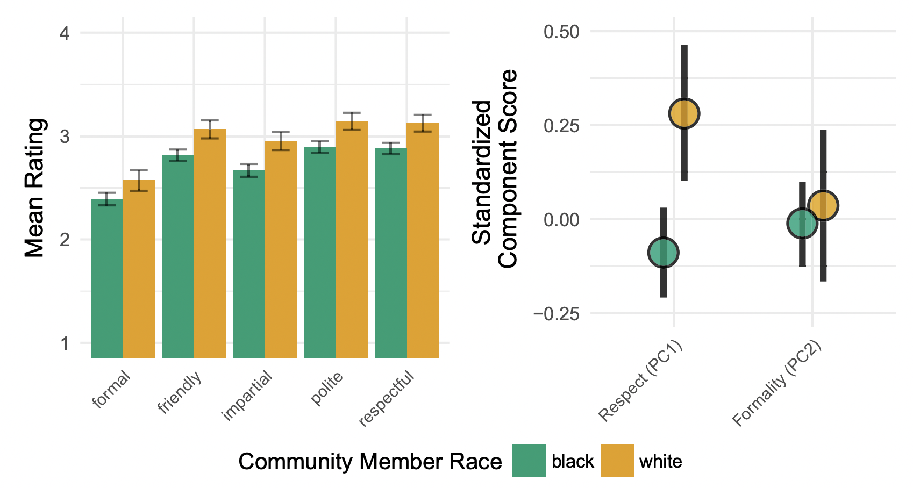
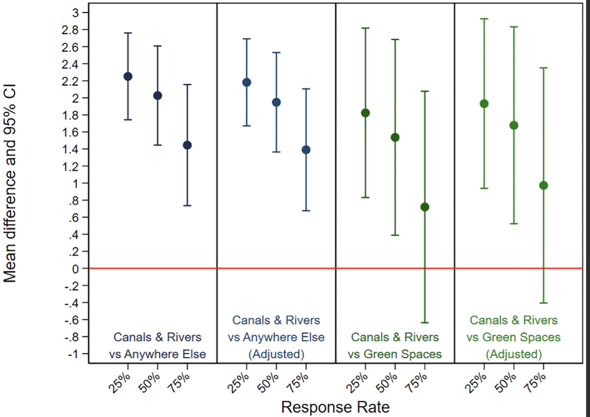
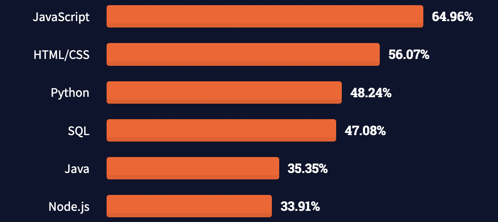

Introduction to CSS
Contents
Introduction to CSS#
Goals of this lecture#
Quick introductions/logistics.
Introduction to CSS: What is it and why does it matter?
Overview of course content.
Course Logistics: CSS 1#
Teaching Team:
Sean Trott: Assistant Teaching Professor in Cognitive Science and CSS.
TAs:
Pulkit Agrawal
Nikolay Kudrin
Purva Kothari
Simran Barnwal
When/Where?:
Lecture: MWF 9-10 AM, Center 212 (also podcasted).
Coding Lab Sections (ERCA 117):
Tuesday, 12-1:50, 2-3:50
Wednesday: 1-2:50
Friday: 12-1:50
What is CSS?#
In a nutshell, Computational Social Science focuses on computational approaches to social science.
At UCSD, Social Sciences encompasses many disciplines:
Economics.
Political Science.
Cognitive Science.
Urban Studies and Planning.
And many more!
What is computation?#
Computation is calculation using well-defined steps, e.g., an algorithm.
A computer is anything that implements these well-defined steps.
Historically, the term “computer” used to refer to people!
A programming language is a way to get a computer to do these things for you.
Can automate processes: speed things up!
Can perform computations at scale.
Can share with others.
CSS Inspirations#
CSS often involves analysis of large-scale datasets using computational and statistical tools.
A key part of this approach is programming, e.g., in Python.
Can yield important theoretical and practical insights.
Economic mobility#
Recent work by Raj Chetty used a combination of social network data and Census data to demonstrate a link between the Economic Connectedness of a neighborhood, and how much Upward Mobility exists in a neighborhood.
Jackson et al. (2022):

Policing and Racial Justice#
Work by Dan Jurafsky and colleagues using body-cam footage has demonstrated racial disparities in how respectfully police officers speak to community members during routine traffic stops.
Jurafsky et al. (2017):

Urban planning and welfare#
Recent work by Nicol Bergou and colleagues used a smartphone app to investigate the link between features of urban design and self-reported sell-being.
Bergou et al. (2022):

Course Overview#
The goal of this course is to teach you:
Computational thinking: how to approach problems and devise solutions from a computational perspective.
Python programming: how to implement those solutions in the Python programming language.
What is Python?#
Python is a programming language.
It’s a way to “do” computation.
Python is also an ecosystem.
A particular computational approach with its own community and practices.
Why Python?#
Strong community: many open source packages for scientific computing.
Human focused: Zen of Python.
Python is widely used.

What does Python look like?#
variable_string = "This is a string"
print(variable_string)
This is a string
variable_integer1 = 50
variable_integer1
50
variable_integer2 = 10
variable_integer2 + variable_integer1
60
What will this course look like?#
This section covers:
Overview of course structure.
Overview of topics.
Overview of grading and assessment criteria.
See the syllabus page for more details!
Course Structure#
Class time is divided into lecture and lab.
Lecture is a time to introduce, explain, and demonstrate new concepts.
There will be a focus on hands-on practice (i.e., “check-ins”).
Lab is a time to practice and develop further fluency with these concepts.
Following along in lecture#
Lecture will have many opportunities to follow along via check-ins.
I do recommend doing this, whether you’re in-person or watching the podcast!
The lectures can all be found on GitHub, and downloaded or cloned into your DataHub account:
We’ll review exactly how to do that in class.
Lab#
Lab will be a time to get hands-on practice with course concepts.
Each week (except Week 0) will have a Coding Lab assignment.
Altogether these assignments are worth 50% of your grade.
You can work collaboratively on Coding Labs during lab time.
Lab attendance is helpful, but not required.
As long as labs don’t get too crowded, you can go to whichever lab you prefer.
Note: For the first two weeks, the Wednesday lab will be remote (hosted by Pulkit).
Overview of topics#
Note that this course will involve many new concepts and software tools. Students come from all sorts of backgrounds with different levels of experience, but our goal is to help you learn Python from the “ground up”, with a focus on using Python for CSS specifically.
Common tools/software for Python programming, e.g., Jupyter notebooks.
Python basics, e.g., variables, conditional statements (“if/else”), and functions.
Working with sequences, such as lists.
Packages for scientific computing, such as
pandas,numpy, andseaborn.
What this course is (and is not)#
This course fulfills a particular niche: it’s intended to get you up to speed with Python, for the purposes of learning more about CSS.
Thus, this course will acquaint you with:
Basic Python programming.
Working with data in Python.
This course is not:
An introduction to software engineering.
A complete introduction to Python.
Course Schedule#
The tentative schedule of topics can be found here: https://ucsd-css1-introduction.github.io/overview/course/schedule.html
This schedule is aspirational.
This is the first time I’m teaching the course, so we may get through topics slower or faster than described there.
Grading and Assessments#
Each week (except Week 0) will have a coding lab due the following Monday.
There are also four problem sets, which will be auto-graded.
There is also a final project––like a big, more coherent problem set.
Grade Component |
Percentage of Final Grade |
|---|---|
10 Coding Labs |
50% (5% each) |
4 Problem Sets |
32% (8% each) |
1 Final Project |
18% |
Extra credit#
There will be at least one option for 2% extra credit––filling out an introductory survey about:
Experience/comfort with programming.
Major (or intended major).
Other background information.
Answers to FAQ#
There are no prerequisites for this course.
There are no midterms or final exam.
See the FAQ page for more information.
Academic Integrity#
From the syllabus:
Please turn in your own work. While you are encouraged to work together on some assignments (e.g., on labs), you should still understand the code you’ve submitted. Problem sets and final project should be completed independently.
Please review academic integrity policies here. Cheating and plagiarism are unfair to other students and ultimately to yourself, and you will be penalized if caught. Instead, if you’re struggling with something, please come to office hours and ask for help!